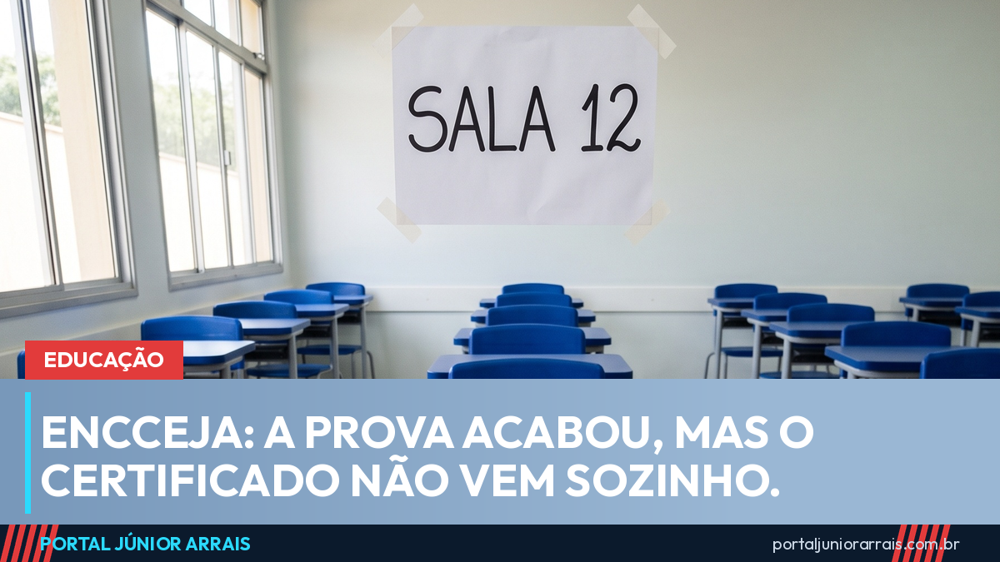
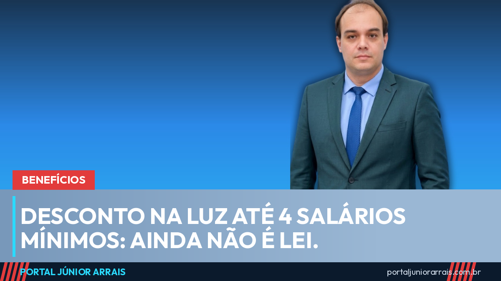
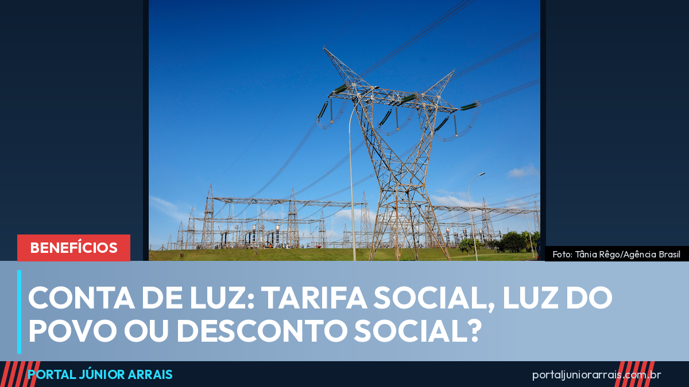
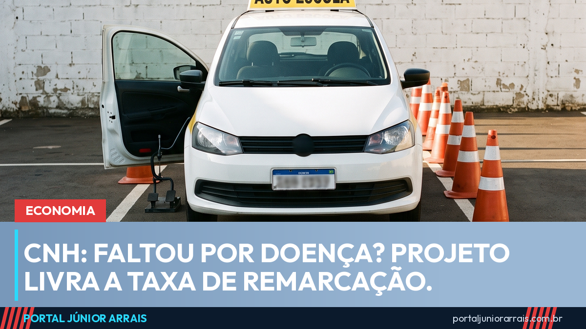

Todas as notícias

Revisão do CadÚnico tem prazo em setembro e pode cortar Bolsa Família, Tarifa Social e BPC

Emergência por estiagem em 7 cidades de AL, BA e PB: o que muda para quem recebe benefício

FGTS, Desenrola e restituição: o que vence ou cai na conta nesta segunda-feira, 31 de agosto

Prévia da inflação fica negativa: conta de luz e comida puxaram os preços para baixo

Eleições 2026: candidaturas negras chegam a 49,8% e se aproximam do perfil do país

Igualdade salarial: prazo vai até 31 de agosto e mulher ainda ganha 21,3% menos

Saúde mental no trabalho: a regra está valendo, mas o STF suspendeu as multas

Calendário do INSS de setembro: veja a data do seu pagamento pelo final do benefício

Jovem negro tem menos carteira assinada e mais bico, mostra pesquisa

Simples Nacional 2027: prazo para entrar no regime foi antecipado para setembro

Dívida rural: CMN flexibiliza renegociação e agricultor familiar entra nas novas regras

Seis crianças morrem por dia de forma violenta no Brasil, aponta o Unicef

Maria da Penha faz 20 anos e presidente do STM defende justiça comum para militar

Arrumou emprego, perde o Bolsa Família? A regra de proteção vale por 12 meses

Prova de vida do INSS: o que já conta sozinho e quando o benefício pode ser bloqueado

Passe Livre interestadual muda: acaba o laudo do SUS e a credencial vira digital

DPVAT e SPVAT acabaram: hoje não existe seguro obrigatório para vítima de trânsito

Restituição do IR: 4º lote libera consulta e o dinheiro cai em 31 de agosto

13º do INSS: quem começou a receber depois de maio só recebe em novembro

Encceja 2026: fez a prova e agora? O certificado não vem sozinho

Consignado do INSS muda: portabilidade em 20 dias e banco tem de provar o contrato

Bolsa Família de setembro: calendário completo por final do NIS, de 17 a 30
Morreu sem receber do INSS ou do FGTS: veja quem pode sacar os valores que ficaram

Conta de luz para quem ganha até 4 salários mínimos: projeto avança, mas ainda não vale

FGTS: saque-aniversário de setembro libera no dia 1º; veja quanto dá para tirar

Pediu demissão: veja o que você ainda recebe — e o que perde ao sair por conta própria

BPC: mutirão do INSS abre mais de 3 mil vagas de avaliação social neste fim de semana

Salário mínimo pode ir a R$ 1.741 em 2027: veja o que muda no INSS, BPC e seguro-desemprego

13º do Bolsa Família não existe: projeto está parado na Câmara e golpistas usam a promessa

Tarifa Social, Luz do Povo ou Desconto Social: entenda qual benefício está na sua conta de luz

CadÚnico: revisão convoca 11,3 milhões de famílias e bloqueios começam em novembro

Consignado CLT: desconto de até 35% do salário e uma dívida que não acaba com a demissão

INSS suspendeu 224 peritos e mandou reanalisar 694 mil pedidos negados sem justificativa

Ganhou o recurso no INSS e o benefício não sai: 336 mil casos esperam a implantação

Metade dos pedidos ao INSS foi negada no primeiro semestre de 2026

Fila do INSS cai para 1,44 milhão, mas 317 mil pedidos passam de 45 dias

TST manda restabelecer salário de empregado que teve corte após entrar na Justiça

Projeto que reconhece pessoa com deficiência como idosa aos 50 anos está parado no Senado

Encceja 2026: prova é neste domingo, 23 de agosto, em todo o país

Governo estuda juros menores na Faixa 3 do Minha Casa Minha Vida, mas nada mudou ainda

Projeto libera remarcar exame da CNH sem pagar taxa quando a falta for por doença

Candidato com deficiência poderá indicar a adaptação de que precisa na prova do concurso

Projeto exige processo e plano de mitigação antes de desapropriar terreno de comunidade

Projeto define como agentes públicos devem atender pessoa com autismo em crise

Projeto cria subsídio para adaptar a casa de quem tem 60 anos ou mais

Doença renal crônica e fissura labiopalatina podem passar a contar como deficiência

INSS: as 18 doenças que dão direito ao benefício sem carência

Minas Gerais resgatou 5,6 mil pessoas de trabalho análogo à escravidão em 13 anos

Projeto obriga empresa a dar café da manhã e almoço ao trabalhador da obra

Crédito para moto de entregador de app: juros de 11,5% para mulher e 12,5% para homem

Bets: 42% das mulheres já apostaram e 72% das apostadoras têm filhos, aponta pesquisa

Família vai poder exigir certidão de antecedentes criminais do cuidador de idoso

Agressão contra mulher dentro de casa cresce 28,9% em dia de jogo de futebol, aponta estudo

Regime de caixa deixa de valer no cálculo do Simples Nacional a partir de 2027

Brasil avança em 71% dos indicadores sociais, mas a desigualdade de renda e de raça piorou

Quem trabalhou em Portugal, Moçambique, Cabo Verde ou São Tomé pode somar esse tempo para a aposentadoria

Trabalho com carteira assinada depois dos 65 anos cresce 73,6%; veja o que muda para quem já é aposentado

Mutirão de perícia do INSS: como funciona a convocação e por que você não escolhe a vaga

Desemprego cai para 5,4%, o menor da série, mas mulher e trabalhador negro seguem atrás

Campanha eleitoral começou: o que muda para quem recebe Bolsa Família e BPC

Pé-de-Meia começa dia 24: veja o dia do pagamento pelo seu mês de nascimento

Câmara aprova isenção de custas na Justiça Federal para quem ganha até R$ 5 mil

Bets bloqueadas: 3 milhões que recebem Bolsa Família ou BPC já não conseguem apostar

Bolsa Família de agosto começa nesta terça, 18: veja quem recebe primeiro

Reforma de casa e pequenos negócios: governo libera R$ 3,5 bilhões para facilitar crédito

Mulheres já ocupam 46,4% das vagas com carteira assinada e diferença para os homens diminui

Bolsa de estudo e pesquisa: projeto suspende prazos para quem sai de licença-maternidade

Aluguel descontado direto do salário: Câmara aprova e aposentado também entra

Decreto libera escolher de quem comprar energia; residência só a partir de 2028

Aposentadoria especial: Câmara acelera a votação, mas nenhuma regra mudou ainda

Motorista e entregador de aplicativo: como não ficar sem aposentadoria

Recálculo da aposentadoria de quem voltou a trabalhar está parado na Câmara

INSS avisa que SMS sobre corte de benefício por prova de vida é golpe

R$ 5,12 bilhões esquecidos em bancos — e o golpe que anda junto com a notícia

13º do INSS: quem começou a receber depois de maio só recebe em novembro

TST decide: briga pelo saque do FGTS por demissão continua na Justiça do Trabalho

Farmácia Popular muda as regras: biometria contra fraude e estudo para incluir exames

Estatuto do Aprendiz sai da pauta do Senado e fica para o fim de agosto

Aneel libera R$ 5,48 bilhões para segurar a conta de luz no Norte e no Nordeste

Projeto quer liberar o FGTS na casa própria a cada 12 meses, e não a cada 2 anos

Maria da Penha: mulher pode se afastar do trabalho por até 6 meses e o INSS paga o período
Lei Maria da Penha completa 20 anos. Um dos direitos menos conhecidos garante o emprego da vítima por até seis meses — e o STF decidiu em 2025 quem paga a conta.

STF derrubou a idade mínima da aposentadoria especial — mas ela ainda não vale na prática
Por 6 votos a 5, o Supremo declarou inconstitucionais as idades de 55, 58 e 60 anos criadas pela reforma da Previdência para quem trabalha exposto a agente nocivo.

Prova de vida do INSS: o aviso chega por WhatsApp oficial — e o golpista já descobriu isso
A prova de vida virou automática e o INSS passou a avisar por WhatsApp oficial e pela caixa postal do gov.br. Entenda como funciona e como não cair em golpe.

Fila da perícia do INSS cai ao menor nível em quase 3 anos; a promessa de outubro é para outra fila
A fila de perícia médica fechou junho com 391,4 mil agendamentos e a espera média caiu para cerca de 30 dias. A promessa de zerar o atraso até outubro, porém, é sobre outra fila — a dos pedidos parados há mais de 45 dias.

Minha Casa Minha Vida para renda de até R$ 13 mil: o que é a tal 'Faixa 4' e o que a norma realmente diz
A faixa para renda de até R$ 13 mil financia imóvel de até R$ 600 mil. Mas 'Faixa 4' é nome comercial: a portaria do Ministério das Cidades só reconhece três faixas urbanas.

FGTS atrasado: 11 milhões de trabalhadores estão com depósito parado pela empresa
Dívida das empresas com o FGTS chegou a R$ 12,6 bilhões e atinge 11 milhões de trabalhadores. Veja como conferir se o seu depósito está em dia.

Desenrola Adimplentes começa a funcionar: até R$ 15 mil com juros de 1,99% ao mês
Linha voltada ao trabalhador informal que paga as contas em dia entrou em operação nesta terça (11). Veja as regras e o alerta oficial sobre anúncios falsos.

544 anúncios falsos de renegociação de dívida em 3 meses; 38% foram feitos com inteligência artificial
Levantamento do NetLab/UFRJ citado pelo Ministério da Fazenda mostra fraudes que usam a imagem do governo para atrair endividados. Veja como reconhecer.

Reavaliação do BPC: quem está dispensado de passar por nova perícia
A revisão do BPC ocorre a cada dois anos, mas quem tem impedimento permanente e irreversível está dispensado da nova avaliação médica. Entenda a regra.

Trabalhador rural tem direito a pausa de 10 minutos a cada 90 de trabalho, decidiu o TST
Tese vinculante do TST garante pausa a quem trabalha em pé ou com sobrecarga muscular no campo. Sem a pausa, o tempo vira hora extra.

Bolsa Família de agosto: quem recebe tudo no dia 18, sem depender do final do NIS
O pagamento de agosto vai de 18 a 31 conforme o NIS, mas famílias de municípios em calamidade ou emergência recebem já no primeiro dia. Veja a regra.

Pensão por morte: quem tem direito, quanto tempo dura e quanto vale em 2026
A pensão por morte do INSS parte de 50% do benefício do falecido, sobe 10% por dependente e tem duração que varia de 4 meses a vitalícia, conforme a idade de quem fica.

BPC de agosto: pagamento vai de 25 de agosto a 8 de setembro; veja a sua data
O Benefício de Prestação Continuada de agosto de 2026 é pago entre 25 de agosto e 8 de setembro, no valor de um salário mínimo, conforme o final do número do benefício.

Acréscimo de 25%: quem se aposentou por incapacidade e precisa de ajuda pode receber a mais
O artigo 45 da Lei 8.213/91 garante 25% a mais na aposentadoria por incapacidade permanente a quem depende da ajuda de outra pessoa no dia a dia. O valor pode ultrapassar o teto do INSS.

Aposentadoria rural: como comprovar o tempo de roça sem nunca ter tido carteira assinada
O segurado especial se aposenta aos 55 anos, se mulher, e aos 60, se homem, com 15 anos de trabalho no campo. O ponto que decide o pedido é a prova documental da atividade rural.

Auxílio-acidente: o benefício que se recebe junto com o salário e quase ninguém pede
Quem ficou com sequela permanente que reduz a capacidade de trabalho tem direito a 50% do salário de benefício, pagos mensalmente e sem impedir que a pessoa continue trabalhando.

Aposentadoria da pessoa com deficiência: o direito que muita gente confunde com o BPC
A Lei Complementar 142/2013 permite que a pessoa com deficiência se aposente mais cedo, com valor acima do salário mínimo, décimo terceiro e pensão por morte — tudo o que o BPC não oferece.

Bolsa Família: o valor da parcela de agosto já aparece antes do pagamento começar
O aplicativo oficial do programa passou a exibir o valor da parcela de agosto antes do início do calendário, que vai de 18 a 31 de agosto conforme o final do NIS.

Gás do Povo: o vale de agosto vence em 9 de setembro e não acumula para o mês seguinte
O vale do Programa Gás do Povo liberado em 10 de agosto precisa ser usado até 9 de setembro nas revendas credenciadas. Quem não retirar perde a recarga, que não se acumula.

Isenção de Imposto de Renda: aposentado com doença grave não paga; veja a lista completa
A Lei 7.713/88 isenta do Imposto de Renda os proventos de aposentadoria e pensão de quem tem doença grave listada em lei. A isenção não alcança o salário de quem está na ativa.

Trabalhadora doméstica: FGTS, seguro-desemprego e o que a lei garante desde 2015
A Lei Complementar 150/2015 assegurou à empregada doméstica FGTS obrigatório, seguro-desemprego, hora extra, adicional noturno e demais direitos do trabalhador com carteira assinada.

STJ libera o INSS a cortar benefício ganho na Justiça, sem entrar com novo processo
Tema 1.157 do STJ decidiu que o INSS pode cancelar administrativamente auxílio por incapacidade e aposentadoria por incapacidade permanente concedidos por sentença definitiva, desde que realize perícia e assegure o direito de defesa.

Fim da escala 6x1: o que ainda falta para a regra valer no seu trabalho
A PEC 221/2019 foi aprovada na Câmara em maio e está no Senado, onde a votação ficou para depois do recesso. O texto reduz a jornada de 44 para 40 horas e garante duas folgas por semana, sem corte de salário.

Licença-paternidade de 20 dias: a lei existe, mas em 2026 continuam sendo 5 dias
A Lei 15.371/2026 ampliou a licença-paternidade e criou o salário-paternidade, mas só entra em vigor em 1º de janeiro de 2027, de forma escalonada: 10 dias em 2027, 15 em 2028 e 20 dias a partir de 2029.

STJ: plano de saúde não pode limitar sessões de terapia de quem tem autismo
Em recurso repetitivo, o STJ fixou no Tema 1.295 que é abusiva a limitação do número de sessões de terapia multidisciplinar prescritas a paciente com Transtorno do Espectro Autista.

CLT garante 3 dias por ano para exame preventivo, e a empresa é obrigada a avisar
A Lei 15.377/2026 alterou a CLT para obrigar a empresa a informar o empregado sobre o direito de faltar até 3 dias a cada 12 meses para exames preventivos de câncer e de HPV, sem desconto no salário.

Agente de saúde e de endemias: PEC aprovada prevê aposentadoria aos 57 e 60 anos
O Senado aprovou a PEC 14/2021, que cria aposentadoria diferenciada para agentes comunitários de saúde e agentes de combate às endemias, com 25 anos de contribuição e regras de transição até 2041. O texto aguarda promulgação.

Comércio em feriado: nova regra exige convenção coletiva para a loja abrir
Portaria do Ministério do Trabalho assinada em 21 de julho de 2026 determina que o comércio só pode funcionar em feriados com autorização em convenção coletiva, e lista 15 atividades liberadas de forma permanente.

Projeto quer acabar com a margem do cartão consignado de aposentados e do BPC
Projeto de Lei 1947/26 extingue as margens específicas do cartão de crédito consignado e do cartão consignado de benefício e fixa teto de 35% para quem recebe BPC, só para empréstimo.

MEI que paga 5% e complementa depois pode receber desde o pedido, decide a TNU
A Turma Nacional de Uniformização fixou, por unanimidade, o Tema 384: a complementação feita durante o processo administrativo permite contar os valores desde a data do pedido.

Bets tiraram R$ 62,5 bilhões das famílias; proibição no Bolsa Família fez efeito
Boletim do Comsefaz, com dados de pagamentos do Banco Central, mostra perda líquida de R$ 62,5 bilhões para as casas de apostas e queda no ritmo das transferências depois da proibição para beneficiários do Bolsa Família.

Encceja 2026: cartão de inscrição já saiu e a prova é no dia 23 de agosto
Inscritos já podem ver local, data e horário da prova no cartão de confirmação. O exame acontece no domingo, 23 de agosto, em dois turnos, em todos os estados e no Distrito Federal.

82% das famílias estão endividadas, e o peso é maior em quem ganha até 3 salários
Pesquisa da CNC mostra endividamento recorde em julho, puxado pelo cartão de crédito. Entre famílias com renda de até três salários mínimos, o índice chega a 84,9%.

Minha Casa Minha Vida: R$ 750 milhões vão para o fundo que cobre o risco do financiamento
Medida provisória publicada em 1º de agosto reforça o FGHab, fundo que cobre morte, invalidez e danos ao imóvel nos financiamentos populares, e prorroga por dois anos o prazo de regularização de unidades.

Lei do Frete: piso mínimo vira regra permanente e anistia de 2022 é vetada
Sancionada em 5 de agosto, a Lei 15.485/2026 torna permanente a exigência do Ciot e a fiscalização do piso mínimo do frete. O perdão às multas dos bloqueios de rodovias de 2022 foi vetado.

Saiu mais dinheiro da poupança do que entrou: R$ 7,15 bilhões a mais em julho
Relatório do Banco Central mostra saída líquida de R$ 7,15 bilhões da caderneta em julho, resultado pior que o do mesmo mês do ano passado. O saldo total segue em R$ 1,02 trilhão.

SUS amplia para 100 mil os atendimentos por mês a quem perdeu o controle nas apostas
O serviço começou em março com 600 atendimentos mensais e saltou para até 100 mil por causa da procura. É gratuito, sigiloso e funciona pelo aplicativo Meu SUS Digital.

Não fez a biometria? Você continua podendo votar em outubro
O cadastro biométrico encerrou em maio e não será reaberto antes do pleito. Quem está com o título regular vota normalmente, apresentando documento de identificação.

Bolsa Família: as datas oficiais de bloqueio e cancelamento da Revisão Cadastral
O MDS publicou o calendário da Revisão Cadastral 2026, dividido em 16 públicos. Cada grupo tem uma data limite para atualizar o cadastro e evitar o bloqueio de dois meses.

Revisão da Vida Toda: STF encerrou de vez e não cabe mais recurso
O Supremo certificou o trânsito em julgado do processo. Aposentados não podem incluir contribuições anteriores a julho de 1994 no cálculo, e as ações paradas voltam a tramitar apenas para cumprimento.

IR 2026: quem sair da malha fina até 10 de agosto entra no último lote
A Receita paga o quarto e último lote regular da restituição em 31 de agosto. Quem regularizar a declaração até 10 de agosto ainda entra nesse pagamento.

FGTS: nascido em junho perde o saque em 31 de agosto, e antecipação cai para 3 parcelas
Quem faz aniversário em junho tem até 31 de agosto para retirar o saque-aniversário. E a partir de 1º de novembro o limite de antecipação cai de cinco para três saques anuais.

Prouni: pré-selecionado na 2ª chamada tem até 14 de agosto para comprovar os dados
Resultado da segunda chamada do Prouni para o 2º semestre saiu em 5 de agosto. Quem foi pré-selecionado e perder o prazo de comprovação é reprovado e fica sem a bolsa.

CNH Social não é programa federal: é do estado, e o governo alertou para site falso
Lei 15.153/2025 só autoriza estados a custear habilitação com dinheiro de multas. Não há inscrição nacional, e o governo federal já alertou para sites falsos que cobram taxa por Pix.

Pedir o BPC não corta o Bolsa Família: o que diz a nova regra do desligamento
Instrução Normativa 54/2026 da Senarc/MDS regula o desligamento voluntário do Bolsa Família. O benefício segue sendo pago durante a análise do BPC e há retorno garantido em até 36 meses.

Isenção do IR até R$ 5 mil: quem parou de pagar e quanto sobra no salário
Lei 15.270/2025 zerou o Imposto de Renda para quem ganha até R$ 5 mil por mês e reduziu o desconto até R$ 7.350. Veja as faixas e o que o governo diz sobre o alcance da medida.

Dignidade Menstrual: absorvente na farmácia para quem está no CadÚnico
Programa criado pela Lei 14.214/2021 distribui absorventes em farmácias credenciadas para pessoas de 10 a 49 anos inscritas no CadÚnico. Veja quem tem direito e quantas unidades.

Teto do INSS em R$ 8.475,55: quase ninguém chega perto dele
Teto dos benefícios subiu 3,9% e chegou a R$ 8.475,55 em 2026. Dados oficiais mostram que mais de 91% das concessões saem com até dois salários mínimos.

ID Jovem: duas vagas grátis no ônibus interestadual e meia-entrada em eventos
Decreto 8.537/2015 garante a jovens de 15 a 29 anos de baixa renda no CadÚnico duas vagas gratuitas e duas com desconto em viagens interestaduais, além de meia-entrada.

Atestado de até 90 dias libera auxílio-doença sem perícia presencial
Portaria do INSS ampliou de 60 para 90 dias o afastamento que pode ser aprovado apenas por análise de documentos, sem perícia presencial. Veja o que mudou e o que continua exigindo perícia.

Dona de casa: INSS por R$ 81,05 e o Bolsa Família não entra na renda
Facultativo de baixa renda contribui com 5% do salário mínimo — R$ 81,05 em 2026. O próprio INSS informa que o Bolsa Família não entra no cálculo da renda familiar.

Patrão mandando votar: o que a Justiça do Trabalho já condenou nas eleições
Justiça do Trabalho alerta para o assédio eleitoral. Empresas já foram condenadas a indenizar trabalhadores pressionados a apoiar candidato do chefe.

Consignado do INSS em 2026: margem de 40%, teto de 1,85% ao mês e biometria
Margem consignável de aposentados e pensionistas está em 40% da renda, com prazo de até 108 meses, teto de juros de 1,85% ao mês e biometria obrigatória.

Aposentadoria em 2026: mulher precisa de 93 pontos e homem, de 103
A regra de pontos subiu de novo em 2026: 93 pontos para mulheres e 103 para homens, além do tempo mínimo de contribuição. Veja o que mudou e o novo teto.

Pente-fino do INSS mira quem está há mais de 2 anos sem passar por perícia
A revisão de benefícios do INSS em 2026 tem como alvo principal o auxílio-doença e a aposentadoria por incapacidade sem perícia há mais de 24 meses.

INSS barra pedido novo de quem já tem processo do mesmo benefício em análise
Regra em vigor desde abril impede novo requerimento de aposentadoria, pensão ou BPC quando já existe pedido igual em análise. Revisão continua liberada.

Bolsa Família de agosto chega a 19,19 milhões de famílias com média de R$ 671,54
Governo investe R$ 12,86 bilhões no Bolsa Família de agosto. Programa alcança 50,05 milhões de pessoas, e 83,9% das responsáveis familiares são mulheres.

Copom decide a Selic nesta quarta: o que muda no cartão, no crediário e no consignado
Mercado espera corte de 0,25 ponto na Selic, para 14% ao ano, na decisão desta quarta-feira (5). Entenda o efeito prático nos juros que a família paga.

Seguro-defeso atrasado: R$ 874,5 milhões liberados a 149,5 mil pescadores
Lei 15.399/2026 autorizou o pagamento de seguro-defeso de períodos anteriores a 2026. Quem ainda tem pedido em análise entra nos próximos lotes.

CadÚnico: prazo desta quinta (6) tira o Bolsa Família de três grupos de famílias
Dia 6 de agosto é data-limite em três frentes da revisão do CadÚnico: um grupo tem o Bolsa Família bloqueado e outros dois perdem o benefício em definitivo.

Auxílio-reclusão custa 0,02% da folha do INSS; aposentadoria custa 63%
Dados oficiais de junho de 2026: 12.662 auxílios-reclusão ativos e R$ 19,7 milhões no mês, contra 42,1 milhões de benefícios e R$ 79,4 bilhões pagos pelo INSS.

Pediu BPC e recebe Bolsa Família? A declaração que você assina não corta o benefício na hora
Regra em vigor desde junho permite pedir o desligamento do Bolsa Família dentro do requerimento do BPC. O pagamento continua durante a análise, e o atrasado do BPC vem com desconto.

Farmácia Popular não dá mais desconto — desde 2025 o remédio sai sem custo
Portaria de fevereiro de 2025 extinguiu o copagamento do Farmácia Popular. São 41 itens e 12 indicações, sem exigência de Cadastro Único — a exceção é o absorvente.

Desconto de associação no INSS está proibido — mesmo se você tiver autorizado
Lei 15.327/2026 vedou o desconto de mensalidade de associação no benefício do INSS, ainda que com autorização do beneficiário, e fixou prazo de 30 dias para devolução.

Pensão para órfãos de feminicídio: não precisa esperar o agressor ser condenado
Benefício de um salário mínimo para filhos e dependentes menores de 18 anos órfãos por feminicídio. Basta boletim, inquérito ou denúncia — e o pagamento só corre da data do pedido.

Salário-família 2026: R$ 67,54 por filho para quem ganha até R$ 1.980,38
Cota de R$ 67,54 por filho de até 14 anos para quem ganha até R$ 1.980,38 em 2026. Doméstica tem direito, aposentado também — e quem paga não é a empresa.

Passagem interestadual do idoso: a Carteira da Pessoa Idosa não é obrigatória, e a empresa que nega tem de provar por escrito
Quem tem 60 anos ou mais e renda de até R$ 3.242 tem duas vagas gratuitas por ônibus interestadual. Cinco documentos comprovam a renda — a carteira é só um deles.

Conta de luz em agosto: bandeira amarela mantém taxa extra de R$ 1,885 a cada 100 kWh
Aneel confirmou a bandeira amarela pelo quarto mês seguido. Numa casa que gasta 200 kWh, o acréscimo fica em torno de R$ 3,77 na fatura do mês.

Quem recebe BPC e arruma emprego não perde tudo: existe o auxílio-inclusão
Benefício vale metade do BPC, hoje R$ 810,50, e é pago junto com o salário de até dois mínimos. Se o emprego acabar, o BPC volta sem repetir a avaliação.

Bolsa Família bloqueado por cadastro desatualizado: o que acontece em cada etapa
Cadastro parado há mais de dois anos, renda não informada ou mudança na família derrubam o benefício. Entenda a diferença entre bloqueio e cancelamento.

Seguro-desemprego 2026: parcelas vão de R$ 1.621 a R$ 2.518,65; veja quem tem direito
Tabela reajustada em 3,9% pelo INPC vale desde janeiro. Veja as faixas de cálculo, o número de parcelas e o que tira o direito ao benefício.

Abono salarial: último lote de 2026 cai em agosto; veja quem recebe até R$ 1.621
Nascidos em novembro e dezembro fecham o calendário do PIS/Pasep, com crédito a partir de 15 de agosto.

Desenrola prorrogado: renegociação de dívidas bancárias vai até 31 de agosto
Ministério da Fazenda estendeu o programa por mais um mês e manteve as mesmas regras.

Restituição do IR não caiu? Erro na chave Pix travou cerca de 165 mil pagamentos
Terceiro lote liberou R$ 4,61 bilhões em 31 de julho, mas parte do dinheiro não chegou por inconsistência bancária.

Bolsa Família paga adicional de R$ 250? Veja o que o governo realmente paga
Não existe parcela nova com esse valor; o número é a soma de adicionais que dependem de quem mora na casa.

Gestação de alto risco passa a dispensar carência no INSS; veja quem tem direito
Condição entra na lista que dispensa as 12 contribuições; demais requisitos continuam valendo.

INSS muda a fila: seu pedido não fica mais parado na agência da sua cidade
Cerca de 2.400 analistas passam a atender por ordem cronológica, sem depender da agência da região.

Salário-maternidade: contribuir só depois que o bebê nasce pode não garantir o benefício
Uma contribuição paga antes do parto continua bastando; deixar para depois do nascimento, não.

Salário mínimo de 2027 deve subir para R$ 1.717; veja o efeito no INSS e no BPC
Valor ainda é projeção e só é fechado em dezembro, mas já indica o reajuste de quem recebe no piso.

BPC/LOAS: renda de até R$ 405,25 por pessoa e cadastro em dia; o guia de 2026
Benefício de um salário mínimo para idosos de 65+ e pessoas com deficiência; CadÚnico desatualizado é a causa nº 1 de bloqueio.

Lucro do FGTS: R$ 13 bilhões começam a cair na conta nesta sexta (31); veja quem recebe
Caixa deposita a partir desta sexta (31): crédito automático de 1,87% sobre o saldo de 31 de dezembro de 2025.

Gás do Povo: novo vale sai dia 10 de agosto; veja quem recebe e como trocar pelo botijão
Vale é liberado todo dia 10; programa já alcança 14,8 milhões de famílias inscritas no CadÚnico.

Biometria obrigatória: quem recebe benefício tem até 31 de dezembro para se cadastrar
Prazo vale para o Bolsa Família e para quem pedir salário-maternidade, incapacidade, pensão, seguro-desemprego e abono.

Desenrola Adimplentes: bom pagador poderá trocar dívida por crédito com juros de até 1,99% ao mês
Programa premia trabalhadores informais que pagam em dia, com garantia do governo para dívidas de até R$ 15 mil.

Eleições 2026: o que muda (e o que não muda) para quem recebe benefício do governo
Pagamentos de Bolsa Família, BPC e INSS continuam normais; o que muda é a comunicação do governo.

Conta de luz: quem ganha até 1 salário mínimo tem desconto automático; veja as regras
Desconto Social reduz em média 12% a fatura de famílias do CadÚnico com consumo até 120 kWh.

Receita Federal lança o Receita Atende, canal único de atendimento pela internet
Novo canal concentra dúvidas e orientações e vai substituir o Fale Conosco aos poucos.

ONU confirma: Brasil segue fora do Mapa da Fome, e insegurança alimentar cai ao menor nível da série
Insegurança alimentar severa cai a 0,6%, menor índice já registrado, aponta o relatório SOFI 2026.

Ganhou renda e passou do limite? Entenda a Regra de Proteção do Bolsa Família
Família que passa da linha de entrada continua recebendo metade do benefício por até 12 meses.

Como saber se você está no CadÚnico e se o cadastro está em dia
Consulta é gratuita pelo aplicativo; cadastro vencido há mais de dois anos bloqueia benefício.

Golpe do falso benefício: os cinco mais comuns e como não cair
Nenhum órgão do governo cobra taxa nem liga pedindo senha; veja como identificar e onde denunciar.

BPC em agosto: o que pode bloquear o seu benefício e como evitar
Pagamento começa dia 25, mas cadastro desatualizado é a principal causa de bloqueio; veja o que conferir.

CadÚnico dispensa visita em casa para quem mora sozinho; entenda a regra
Falta da visita não pode mais barrar inscrição, atualização nem manutenção do BPC e do Bolsa Família de quem mora sozinho.

FGTS: nascidos em agosto podem sacar a partir do dia 3; prazo vai até 30 de outubro
Saque fica disponível de 3 de agosto a 30 de outubro; quem adere perde o direito ao saque integral na demissão.

Bolsa Família de agosto: calendário completo por final do NIS, de 18 a 31
Pagamentos vão de 18 a 31 de agosto, escalonados pelo final do NIS; veja a sua data e os valores.

INSS: calendário de agosto começa dia 25; veja a sua data pelo final do benefício
Quem ganha até um salário mínimo recebe a partir de 25 de agosto; quem ganha acima, a partir de 1º de setembro.

Conta de luz grátis pela Tarifa Social: quem tem direito e o prazo até dezembro
Desconto de 100% até 80 kWh vale para quem está no CadÚnico; 3,5 milhões precisam atualizar dados.

Pé-de-Meia: quase 1 milhão de contas estão paradas; veja como liberar a sua
São 991 mil contas sem movimentação; menor de 18 anos depende da autorização do responsável.

Pé-de-Meia: família tem até 7 de agosto para estar no CadÚnico e garantir o benefício
Quem não estiver com o cadastro ativo até a data-base só entra no programa no ano que vem.

Governo libera R$ 547 milhões para devolver descontos indevidos do INSS
Medida provisória abre crédito extraordinário para o ressarcimento de aposentados e pensionistas.

INSS começa a pagar julho nesta segunda (27); veja o calendário completo até 7 de agosto
Quem ganha um salário mínimo recebe primeiro, pelo final do cartão do benefício.

Minha Casa Minha Vida amplia limite de renda para R$ 3.200 na faixa 1
Teto do imóvel também subiu, para R$ 600 mil. Veja as novas faixas.

BPC de R$ 1.621 começa a ser pago segunda (27); veja quem tem direito
Calendário, regra de renda por pessoa e o alerta do CadÚnico.

Gás do Povo: vale de julho pode ser trocado até 9 de agosto
Quem recebe neste mês, quantas recargas por ano e como usar.

FGTS: nascidos em julho já podem sacar; prazo até 30 de setembro
Como funciona o saque-aniversário e o cuidado antes de aderir.

Flávio Bolsonaro promete internet e até celular de graça para mulheres
Plano "Brasil por Elas" é promessa de campanha — cuidado com golpes.

Pé-de-Meia volta a pagar de 24 a 31 de agosto; veja o calendário
5ª parcela sai para quem teve 80% de presença em maio e junho.

Gás do Povo: botijões da China já são 1 em cada 4 vendidos no Brasil
Importação disparou com o programa; entenda a disputa na indústria.

Bolsa Família: veja o calendário completo de julho e os valores
Pagamentos escalonados pelo final do NIS, com as regras para receber.

Governo adia para julho de 2027 novas regras do CadÚnico
Entrevista domiciliar obrigatória foi adiada; veja o que continua valendo.